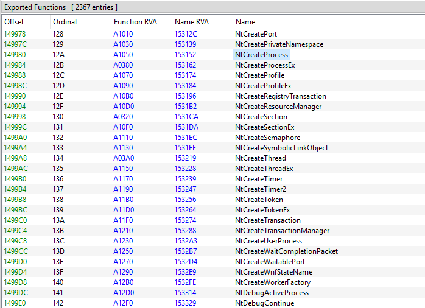
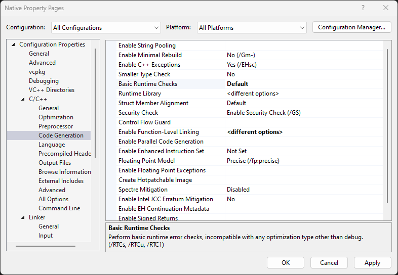

Escrevendo Aplicações Nativas para Windows - Parte 1
Por Davi Chaves
O objetivo desse artigo é montarmos um binário que dependa exclusivamente da ntdll.dll. Abaixo estão algumas funções exportadas por essa biblioteca.

Using Native Functions
Antes de construirmos uma aplicação que dependa apenas da ntdll.dll, vamos primeiro aprender a como utilizar as funções dessa biblioteca.
Primeiro Método: Dynamic Linking
Como toda função exportada, podemos utilizar a função GetProcAddress para acharmos o endereço de uma certa função e chama-la quando quisermos. É importante perceber que o código abaixo faz é apenas pegar o endereço de uma função e chama-lá. Essa técnica poderia ser usada para linkar quaisquer funções de outras bibliotecas.
Note que ainda temos que adicionar de forma manual essas definições (ex.: SYSTEM_BASIC_INFORMATION).
#include <stdio.h>
#include <Windows.h>
typedef enum _SYSTEM_INFORMATION_CLASS {
SystemBasicInformation,
} SYSTEM_INFORMATION_CLASS;
typedef struct _SYSTEM_BASIC_INFORMATION {
ULONG Reserved;
ULONG TimerResolution;
ULONG PageSize;
ULONG NumberOfPhysicalPages;
ULONG LowestPhysicalPageNumber;
ULONG HighestPhysicalPageNumber;
ULONG AllocationGranularity;
ULONG_PTR MinimumUserModeAddress;
ULONG_PTR MaximumUserModeAddress;
ULONG_PTR ActiveProcessorsAffinityMask;
CCHAR NumberOfProcessors;
} SYSTEM_BASIC_INFORMATION, * PSYSTEM_BASIC_INFORMATION;
typedef NTSTATUS (NTAPI *PNtQuerySystemInformation)(
_In_ SYSTEM_INFORMATION_CLASS SystemInformationClass,
_Out_writes_bytes_opt_(SystemInformationLength) PVOID SystemInformation,
_In_ ULONG SystemInformationLength,
_Out_opt_ PULONG ReturnLength);
int main()
{
PNtQuerySystemInformation NtQuerySystemInformation = (PNtQuerySystemInformation)GetProcAddress(GetModuleHandle(L"ntdll"), "NtQuerySystemInformation");
SYSTEM_BASIC_INFORMATION sysInfo;
NtQuerySystemInformation(SystemBasicInformation, &sysInfo, sizeof(sysInfo), nullptr);
printf("Processors: %u\n", (ULONG)sysInfo.NumberOfProcessors);
return 0;
}
Segundo Método: ntdll.lib
Como qualquer outra biblioteca, podemos adicionar um arquivo “.lib” para que o linker saiba aonde essa função está sendo implementada. Aqui alguns links aonde você pode baixar essa ntdll.lib:
- Fyyre/ntdll: ntdll.h - compatible with MSVC 6.0, Intel C++ Compiler and MinGW. Serves as a complete replacement for Windows.h (github.com)
- ScyllaHide/3rdparty/ntdll at master · x64dbg/ScyllaHide (github.com)
- injection/ntlib at master · odzhan/injection (github.com)
Note que você poderia contruir sua própria ntdll.lib.
#include <stdio.h>
#include <Windows.h>
typedef enum _SYSTEM_INFORMATION_CLASS {
SystemBasicInformation,
} SYSTEM_INFORMATION_CLASS;
typedef struct _SYSTEM_BASIC_INFORMATION {
ULONG Reserved;
ULONG TimerResolution;
ULONG PageSize;
ULONG NumberOfPhysicalPages;
ULONG LowestPhysicalPageNumber;
ULONG HighestPhysicalPageNumber;
ULONG AllocationGranularity;
ULONG_PTR MinimumUserModeAddress;
ULONG_PTR MaximumUserModeAddress;
ULONG_PTR ActiveProcessorsAffinityMask;
CCHAR NumberOfProcessors;
} SYSTEM_BASIC_INFORMATION, * PSYSTEM_BASIC_INFORMATION;
extern "C" NTSTATUS NTAPI NtQuerySystemInformation(
_In_ SYSTEM_INFORMATION_CLASS SystemInformationClass,
_Out_writes_bytes_opt_(SystemInformationLength) PVOID SystemInformation,
_In_ ULONG SystemInformationLength,
_Out_opt_ PULONG ReturnLength);
#pragma comment(lib, "ntdll")
int main()
{
SYSTEM_BASIC_INFORMATION sysInfo;
NtQuerySystemInformation(SystemBasicInformation, &sysInfo, sizeof(sysInfo), nullptr);
printf("Processors: %u\n", (ULONG)sysInfo.NumberOfProcessors);
return 0;
}
Eliminando o Windows.h
Perceba que estamos incluindo o “Windows.h” pois ele oferece definições e macros úteis como ULONG, NTSTATUS… Entretanto, a maioria das funções e objetos nativos não estão expostas pela Microsoft. Para isso, podemos utilizar o repositório winsiderss/phnt: Native API header files for the System Informer project. (github.com). Dessa forma, quase todas as definições que usaremos já estarão definidas nesses dois headers:
#include <stdio.h>
#include <phnt_windows.h>
#include <phnt.h>
#pragma comment(lib, "ntdll")
int main()
{
SYSTEM_BASIC_INFORMATION sysInfo;
NtQuerySystemInformation(SystemBasicInformation, &sysInfo, sizeof(sysInfo), nullptr);
printf("Processors: %u\n", (ULONG)sysInfo.NumberOfProcessors);
return 0;
}
Eliminando outras dependências
Note, entretanto, que nosso binário ainda está utilizando funções não nativas. Para construirmos um binário que importa apenas a ntdll.dll, temos que dizer ao Visual Studio para remover todas as outras dependencias padrões.
O significado de cada flag está no canto inferior de cada imagem.


Por conta disso, não temos mais a função main, pois ela é chamada pela biblioteca CRT (C Runtime). Perceba, também, que não temos mais a função printf implementada pela CRT. Apesar de a ntdll.dll também definir a função printf, não vamos usa-lá agora.
#include <phnt_windows.h>
#include <phnt.h>
#pragma comment(lib, "ntdll")
NTSTATUS NtProcessStartup(PPEB _peb) {
SYSTEM_BASIC_INFORMATION sysInfo;
NtQuerySystemInformation(SystemBasicInformation, &sysInfo, sizeof(sysInfo), nullptr);
return STATUS_SUCCESS;
}
Finalmente, temos um binário nativo. Entretanto, não conseguimos executa-lo por meios normais.
Execução
Binários nativos não podem ser executados utilizando funções “normais”, como CreateProcess. Existem duas formas para executar uma aplicação nativa.
BootExecute
Esse método consiste em adicionar o binário no diretório System32 e alterar um registro para indicar que esse binário deve ser carregado quando o sistema iniciar.
Computer\HKEY_LOCAL_MACHINE\SYSTEM\CurrentControlSet\Control\Session Manager
Nesse caminho é necessário adicionar mais um campo no registro BootExecute. Além disso, coloque o binário na pasta System32. Dessa forma, nossa aplicação será carregada e executado quando o SO estiver inicializando.
RtlCreateUserProcess
Uma outra forma de executar uma aplicação nativa é utilizando funções nativas para criar o processo. Dessa forma, podemos criar um programa que vai executar nossos binários nativos.
// RunNative
#include <phnt_windows.h>
#include <phnt.h>
#include <stdio.h>
#pragma comment(lib, "ntdll")
int wmain(int argc, const wchar_t* argv[]) {
UNICODE_STRING name;
RtlInitUnicodeString(&name, argv[1]);
PRTL_USER_PROCESS_PARAMETERS params;
auto status = RtlCreateProcessParameters(¶ms, &name, nullptr, NULL, nullptr,
nullptr, nullptr, nullptr, nullptr, nullptr);
if (!NT_SUCCESS(status))
return 1;
RTL_USER_PROCESS_INFORMATION info;
status = RtlCreateUserProcess(&name, 0, params, nullptr, nullptr, nullptr, 0, nullptr, nullptr, &info);
if (!NT_SUCCESS(status))
return 1;
RtlDestroyProcessParameters(params);
ResumeThread(info.ThreadHandle);
CloseHandle(info.ThreadHandle);
CloseHandle(info.ProcessHandle);
return 0;
}
RunNative.exe "\??\C:\Users\IEUser\Desktop\Native.exe"
Perceba que é necessário utilizar \??\.
Conclusão
Com isso, temos um ambiente que podemos executar um binário nativo. Entretanto, ainda não programamos nada de interessante. Vamos fazer isso no próximo artigo.